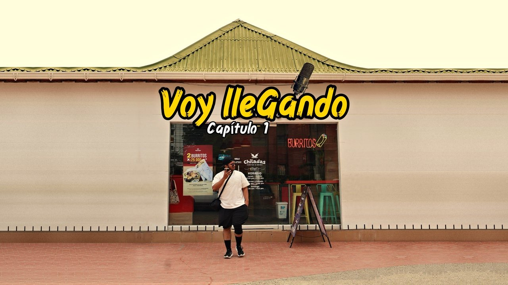

Un podcast sobre la frase que más decimos los costeños cuando vamos tarde. Escucha el capítulo, escoge de qué lado lo quieres oír y al final cuéntanos el tuyo.
Antes de escuchar, ¿tú qué crees?
Al final te volvemos a preguntar, para ver si cambiaste de opinión. Usa audífonos: dura 8 minutos y medio.
Todos hemos sido los dos. Escoge uno; al terminar puedes oír el otro.
Jesús lo preguntó al final: ¿cuál fue tu «voy llegando» más personal? Tu historia nos llega y, cuando la revisemos, sale en el muro como anónima. Las mejores pueden aparecer en el capítulo 2.